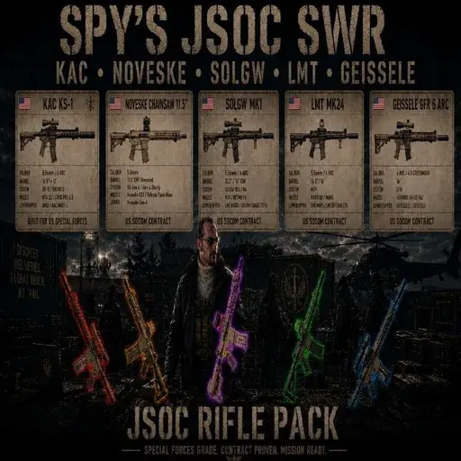
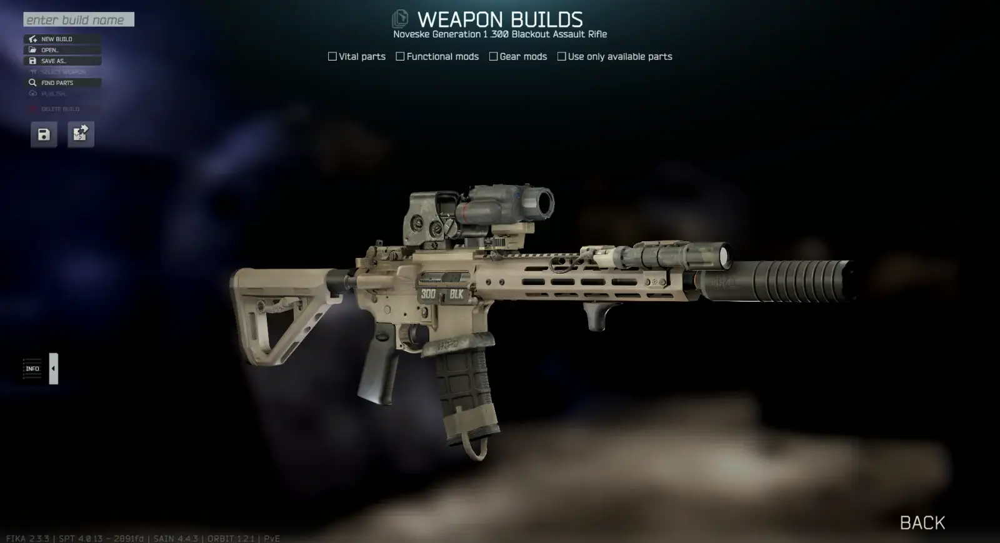
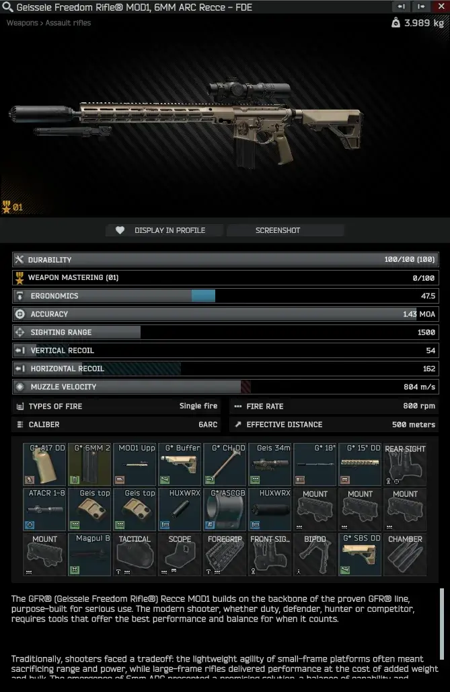
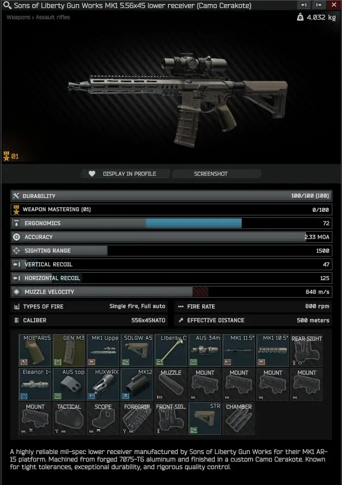
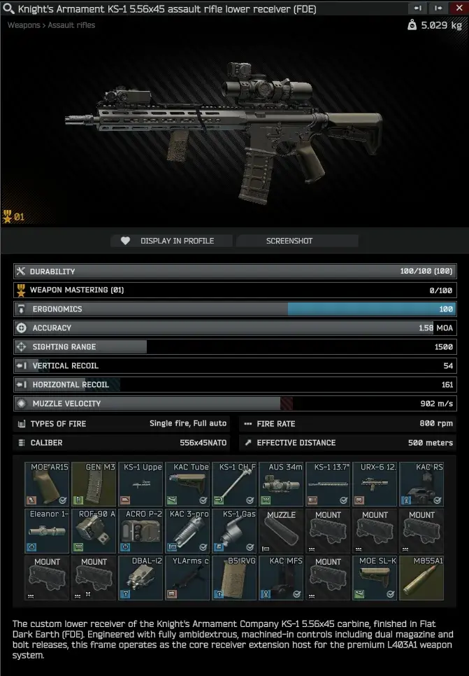

Spy's JSOC-SWR
- Downloads
- 9,554
- Favourites
- 45
- Mod lists
- 45
Spy’s JSOC-SWR
Huge thanks to bobinstein for the full refactor, Unity and Blender work, shader help, bundle work, audio fixes, and for helping get this update across the finish line.
Spy’s JSOC-SWR, short for Joint Special Operations Command Service Weapon Replacement, is the 2.0.0 refactor and expansion of Spy’s KAC KS-1.
This mod brings the Knight’s Armament KS-1, SOLGW MK1, GFR, GFR-X, LMT platform, and 6mm ARC ammunition into SPT with custom parts, presets, bundles, shaders, and Peacekeeper availability.
The KS-1 includes black and FDE variants with matching KAC components. The SOLGW MK1 includes Black, FDE, Camo, and Grey variants. JSOC-SWR also adds GFR/GFR-X content, LMT weapon content, multiple barrel and handguard options, custom receiver parts, gas blocks, charging handles, furniture, and ready-to-run trader presets.
If you wanted a slick modern AR-style rifle platform that feels right at home alongside Tarkov’s existing weapon ecosystem, this one should scratch that itch.
Features
- Black and FDE KS-1 rifle variants
- SOLGW MK1 variants in Black, FDE, Camo, and Grey
- GFR and GFR-X weapon content
- LMT weapon content
- 6mm ARC ammunition support
- Custom KAC, SOLGW, GFR, and LMT parts
- Multiple barrel and handguard options
- Peacekeeper assort and presets
- Custom bundles and shader setup
- Server-side only
Installation
- Delete the old
spys-kac-ks1folder if you have it installed. - Download and extract the mod archive.
- Place the
spys-JSOC-SWRfolder into your SPTuser/modsdirectory. - Launch SPT and enjoy.
Do not run spys-kac-ks1 and spys-JSOC-SWR at the same time.
Requirements
- SPT 4.0.13
- WTT-ServerCommonLib 2.0.20
- EpicsAIO 4.0.8
Credits
Huge thanks to bobinstein for the full refactor, Unity and Blender work, shader help, bundle work, audio fixes, and for helping get this update across the finish line.
Additional thanks to EpicRangeTime for shaders and EpicsAIO.
Media

https://www.youtube.com/watch?v=Os6GqTYwVpc


Version
2.0.1
Spy’s JSOC-SWR 2.0.1
This is the 2.0.1 update for Spy’s JSOC-SWR.
Requirements: SPT 4.0.13 WTT-ServerCommonLib 2.0.20 or newer EpicsAIO 4.0.8 or newer
Changes: Added Noveske Gen 1 lower receiver content in .300 Blackout. Added Noveske Gen 3 upper receiver content in .300 Blackout. Added Modlite OKW flashlight content. Added Noveske Cold Hammer Forged 11.5 inch barrels in 5.56x45 and .300 Blackout. Added Noveske Chainsaw 5.56 upper, lower, and 10.5 inch handguard content. Added SKEET-IR flip-to-side content with EOTech EXPS sight setup. Fixed LMT alignment issues. Updated package and DLL metadata to 2.0.1.
Huge thanks to bobinstein for the new 2.0.1 content and LMT fixes.
Dependencies
Version
2.0.0
Spy’s JSOC-SWR 2.0.0 This is the new 2.0.0 release of the former Spy’s KAC KS-1 mod, now renamed and refactored as Spy’s JSOC-SWR. JSOC-SWR stands for Joint Special Operations Command Service Weapon Replacement. Important: delete the old user/mods/spys-kac-ks1 folder before installing this version. Do not run the old KAC KS-1 folder and the new JSOC-SWR folder together. Requirements: SPT 4.0.13 WTT-ServerCommonLib 2.0.20 EpicsAIO 4.0.8 Dependency change: EpicsAIO is now required alongside WTT-ServerCommonLib. Highlights: Added GFR and GFR-X weapon content. Added LMT weapon content. Added 6mm ARC ammunition support. Kept the KS-1 and SOLGW content in the new package. Updated the DLL and source version metadata to 2.0.0. Added EpicsAIO as a dependency alongside WTT-ServerCommonLib. Fixed APBS recursive attachment-loop reports on GFR/GFR-X handguard filters. Fixed the LMT monolithic upper item data issue that could break Peacekeeper’s displayed inventory. Fixed SOLGW stock-slot setup. Fixed the KS-1 heat-wave effect. Fixed the SOLGW gray handguard bundle. Fixed SOLGW MK1 handguards showing as compatible with SIG SPEAR uppers. Fixed a KS-1 failure-to-eject animation issue. Fixed invalid Strandhogg ABUPAT and Tasmanian Tiger Modular Pack compatibility on JSOC weapon handguards.
Dependencies
Version
1.0.5
Changes
- Added SOLGW MK1 weapon variants in Black, FDE, Camo, and Grey.
- Fixed the KS-1 audio glitch. Thanks to bobinstein for the fix.
- Fixed KS-1 backpack compatibility so backpacks can no longer attach to the top rail.
Known Issues
- Failure-to-eject animation still needs to be fixed.
- The SOLGW MK1 12.75-inch Gray handguard currently uses the
greybundle, which displays the wrong length. The matchinggraybundle was removed because it causes the large red in-game item error.
Dependencies
Version
1.0.4
1.0.4
- Removed leftover
epic_shaders.bundledependency references frombundles.json. - This was a cleanup-only change. The dependency was not required by the included shader bundle and should not affect visuals or functionality.
Dependencies
Version
1.0.3
Fixed
- Fixed the FDE KS-1 Flea Market purchase hang caused by the rear sight using the wrong parent ID in the FDE weapon preset.
Changed
- Improved KS-1 heat/cooling balance to better fit the rifle’s premium price and Knights Armament setup.
- Base KS-1 cooling is now 3.35.
- KS-1 barrel cooling now scales upward by barrel length.
- Slightly reduced heat buildup and durability burn.
Dependencies
Version
1.0.2
Version 1.0.2
Small dependency cleanup for the black KS-1 preset.
- Replaced the Magpul MOE SL-S stock reference with the vanilla AR-15 Magpul CTR Carbine stock
- Updated the Peacekeeper assort entry to use the vanilla CTR stock
- Updated the black KS-1 preset to use the vanilla CTR stock
- Removed the accidental dependency on the EukyreECOT SL-S stock item
Dependencies
Version
1.0.1
Version 1.0.1
Repackaged the mod archive into the standard SPT drag-and-drop layout:
SPT/user/mods/spys-kac-ks1
This should make installation clearer and more beginner-friendly. The KS-1 is still server-side only, so there is no BepInEx folder or client plugin included.
Dependencies
Version
1.0.0
FInitial release for SPT 4.0.13. Adds the KAC KS-1 in black and FDE variants, custom KS-1 parts, multiple barrel/handguard options, Peacekeeper LL4 presets, custom bundles, shaders, and audio-fixed weapon handling sounds.